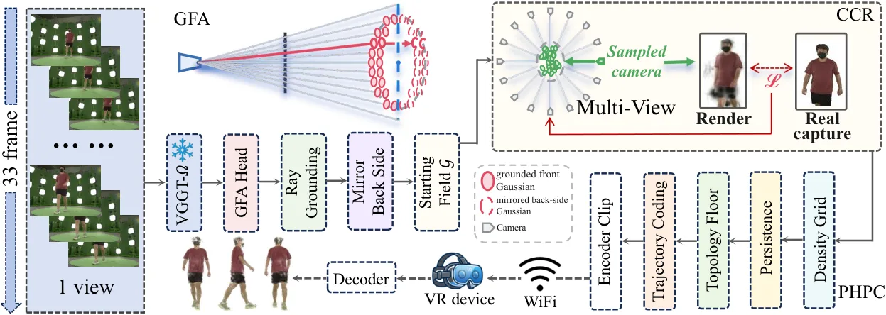
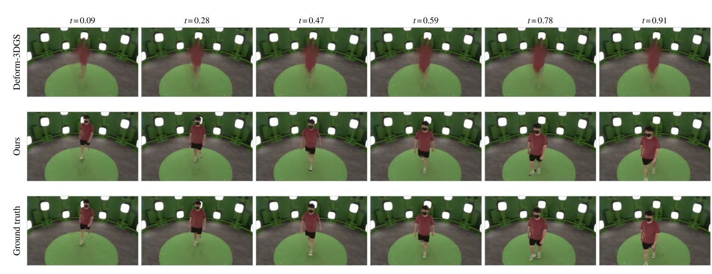
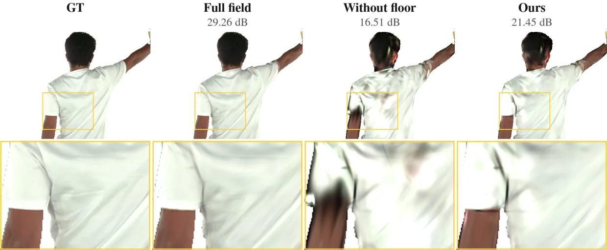
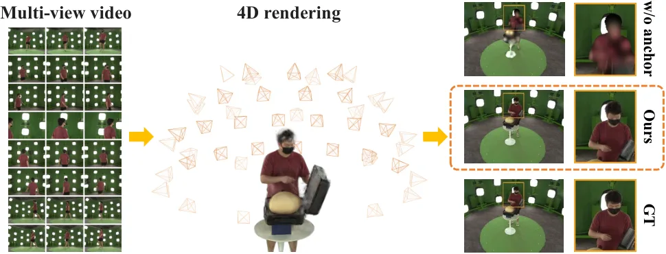
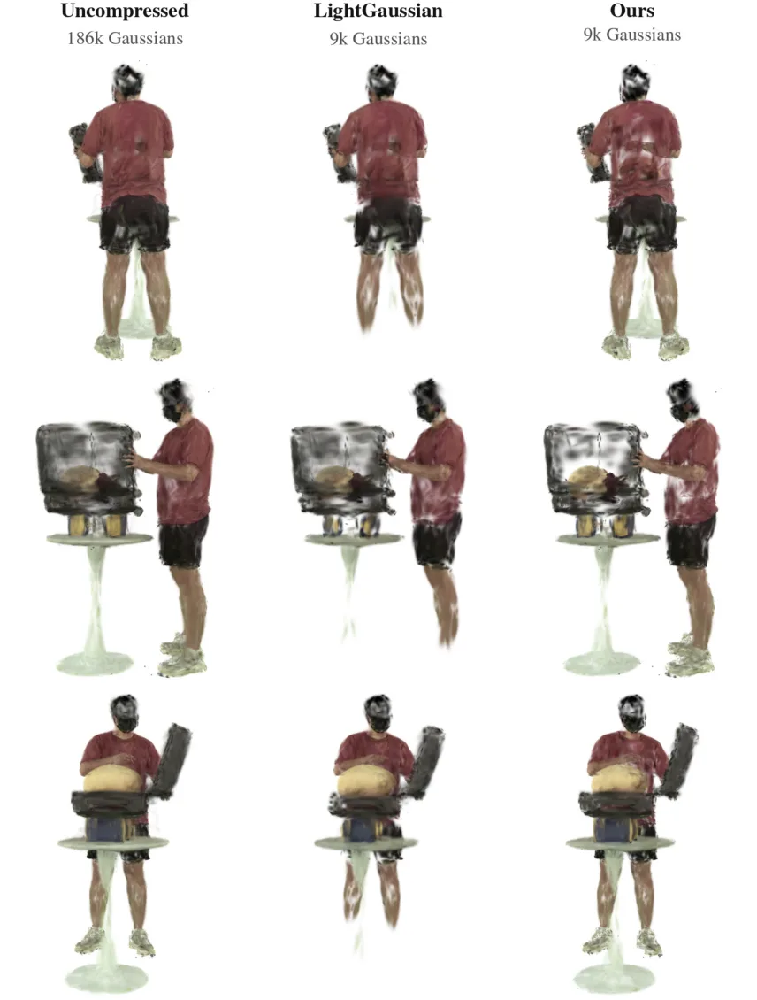
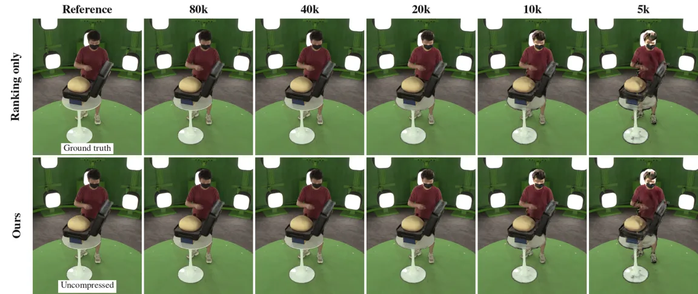

Amortized Anchor Refinement：面向可部署连续时间 4D Gaussian 重建的摊销锚点细化
Amortized Anchor Refinement for Deployable Continuous-Time 4D Gaussian Reconstruction
把前馈几何发现与受预算约束的场景优化组合，解决连续时间动态重建在边缘设备上的显存、质量和流式传输矛盾。
作者、单位与技术谱系 · Research context
方法本质拆解 · What actually changed
训练
冻结 backbone 不做任务特定预训练，主要预算用于场景 CCR refinement。长短片段使用固定官方 split。
约束
ray-grounded anchor 避免初始化退化，capacity floor 保持表示密度。PHPC 保护压缩后的拓扑结构。
推理
前馈深度和特征初始化带三阶轨迹的连续场。压缩轨迹后由 WebGL 客户端直接按时间渲染。
机制
anchor 负责几何发现，CCR 负责细化，mirror 补齐短片段背面。topology floor 独立保护细结构。
方法本质：结构化训练、观测约束、推理流程和可靠性机制共同决定结果，不能把单一模块的增益误认为完整方法效果。

动机与问题Motivation
动机与问题
独立 XR 头显只有几 GB 显存和有限计算，传统 per-scene 优化需要 workstation 级资源，直接减少 Gaussian 数量或迭代次数会让表示退化。动态场景还要求整个时间场驻留，逐帧 residual streaming 不能解决初始几何发现和任意时间查询的共同约束。
方法Method
方法总览
冻结 VGGT-Ω 从多视图视频预测深度和特征，Grounded Feed-forward Anchor 将 Gaussian 放在输入射线上并补充镜像的背面锚点。Capacity Constrained Refinement 在保持最小 Gaussian 数的条件下优化照片一致性，Persistent Homology Pruning and Compression 再按拓扑约束压缩并编码连续轨迹。
关键技术细节
每条输入射线默认生成 K=2 个 Gaussian，中心是 camera center + predicted depth × ray + residual；每个 Gaussian 用三阶时间位置轨迹和短时间 opacity window 表示 scene flow。CCR 在剪枝后保留至少 Nmin 个最高 opacity primitive，PHPC 在密度体素上计算 persistence diagram，量化静态属性并以 10-bit 编码九个轨迹系数。

实验Experiments
实验设置
Stage-Capture 有 9 个动态人和人—物交互场景，由 32 个同步标定相机以 1024×750 采集 33 帧；官方 every-other-frame split 用 17 个偶数帧训练、16 个奇数帧测试。指标包括前景 masked PSNR、SSIM、LPIPS、Gaussian 数、显存、拟合时间、拓扑保持率和 bitrate；对照包括 Deformable-3DGS、GaussianFlow、4D-GS、RetimeGS、LightGaussian 和 RadSplat。
实验数字与比较
完整 33 帧场景的平均 held-timestamp PSNR 为 24.31±2.22 dB，优于 Deformable-3DGS 18.73、GaussianFlow 20.06 和 4D-GS 21.20 dB；拟合峰值显存为 2.12 GB、43 min、23.9×10^4 Gaussian。9 帧设置为 21.47 dB、1.0 GB、9.1 min；4×10^4 Gaussian 包在 Quest Pro 上以 58 Mbps 传输 0.44 s、立体渲染 87 fps，均来自官方 HTML 表 1–5。
消融/失败边界
walk 场景从零优化只有 16.4 dB 和 40 个 Gaussian，加 anchor 后为 20.48 dB，再加 capacity floor 达到 24.22 dB 和 23.9×10^4 个 Gaussian，说明两者缺一不可。9 帧中去掉 mirror anchor 后 PSNR 从 24.76 降到 16.00 dB；在 2×10^4 Gaussian 压缩预算下，加入 topology floor 使拓扑保持率从 0.82 升至 0.88、PSNR 从 19.52 升至 20.30 dB。
局限与迁移Limitations & Transfer
局限与待核验
作者明确指出三阶轨迹难以表达快速折返的松散织物、接触区域和高速物体，镜像假设也可能在多主体遮挡时放置错误背面。待核验项包括真实移动相机、非人类动态物体、无线抖动、头显端解码功耗和更低于 4 GB 的设备预算。
与你研究路线的关系
可迁移模块是用几何锚点消除优化初始化退化、用 capacity/topology floor 将不确定性转成资源约束，并直接输出可查询轨迹。下一步可把锚点置信度、轨迹残差和拓扑保持率接入可靠状态估计，比较固定预算细化与增量因子图在动态遮挡和故障恢复下的收益。
{kind=link}

{kind=link}

{kind=link}

{kind=link}
